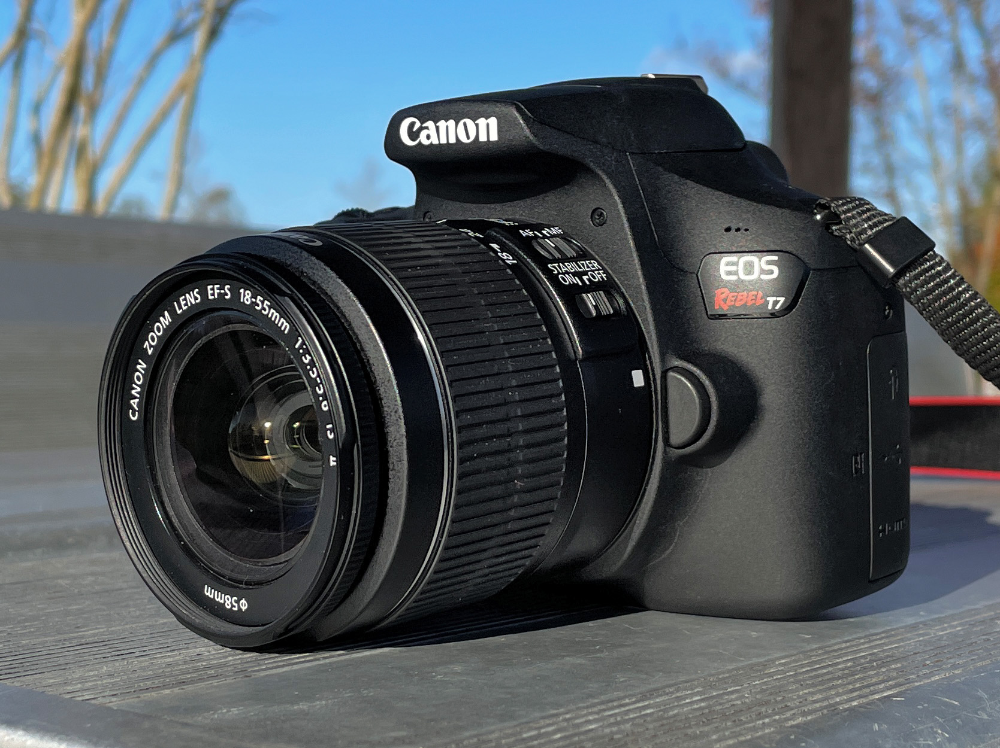

These tools are the ones I have used in my work.

For my first five years, I have worked with the Canon EOS 2000D almost exclusively.
A great starter camera, it has allowed me to learn the basics of lighting, framing, and shot taking and expand into bending and breaking those rules as I wish. From landscapes to portraits, this camera has been phenomenal in working me towards the next steps of not only upgrading, but being comfortable enough to start working in film.